Excel｜不知道这十三条基本知识，敢说你会公式吗？
原创 韩老师讲office 2019-01-25 19:36:52
经常会有朋友问起公式操作的问题，比如填充、检查错误、显示、保护等问题，那韩老师就总结一下公式操作知识。
一、运算符
1、数学运算符：
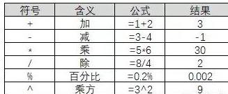
2、比较运算符
比较运算符
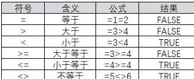
逻辑运算主要包括逻辑与、逻辑非和逻辑或，在Excel中的逻辑运算用逻辑函数完成，主要用于组合多个比较表达式或取反运算。常见的逻辑函数有逻辑与运算函数AND、逻辑非运算函数NOT、逻辑或运算函数OR。
逻辑运算符的返回结果是TRUE或FALSE
3、引用运算符
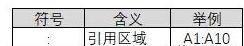
4、文本运算符
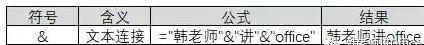
二、运算符优先级
公式中同时用到了多个运算符，Excel将按下面的顺序进行运算：
- 如果公式中包含了相同优先级的运算符，Excel将从左到右进行计算；
- 如果公式中有不同级别的混合运算，运算符的顺序从高到低依次为：引用运算符（:）、负号（如一l）、%（百分比）、^（乘方）、*和/（乘和除）、十和一（加和减）、&（连接符）、比较运算符。
- 如果要修改计算的顺序，应把公式需要首先计算的部分括在圆括号内。
三、相对引用于绝对引用
1、概念：
- A1 : 相对引用。
- $A$1: 绝对引用
- $A1: 列绝对引用，行相对引用
- A$1: 行绝对引用，列相对引用
2、用途:
- 行前添加$，复制公式时，行数不发生变化。
- 列前添加$，复制公式时，列数不发生变化。
3、F4键——引用方式之间切换的快捷键：
- 按一次：绝对引用；
- 按两次：对行绝对引用、对列相对引用；
- 按三次：对行相对引用、对列绝对引用；
- 按四次：相对引用。
4、举例：
- 九九乘法表的生成，灵活运用了引用方式。
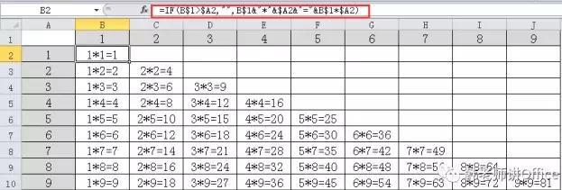
- VLOOKUP多行多列查找也运用了多种引用方式。
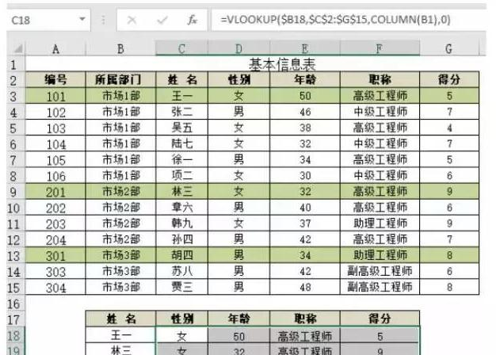
四、公式排查错误
很多朋友，在写公式出现错误时，手足无措，马上来问韩老师：我这个公式哪里错了？
其实：有一个找韩老师更快捷的途径——公式求值！
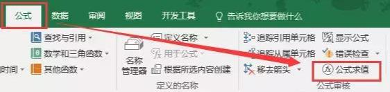
公式求值，可以帮你一步一步排查公式错误，最终找到错误的位置。
举例：
如下根据身份证计算出生日期，出现错误，通过公式求值，很容易检查出公式哪个位置错误：
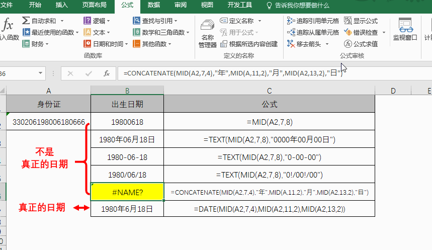
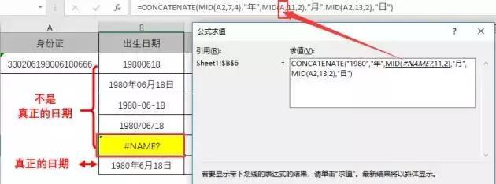
五、公式填充
公式由一个单元格拖到另一单元格叫“公式填充”，主要依靠“填充柄”来完成，填充柄位于公式单元格右下角：
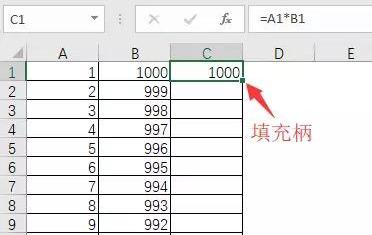
两种方式：
1、拖动填充柄：适用于行数少的情况，如下:
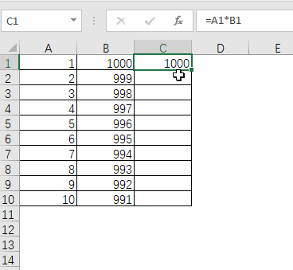
2、鼠标左键双击填充柄：适用于行数很多的情况，如下:

当然：数据行少，也可以用双击填充柄。
六、公式批量填充
选取要输入公式的区域，在编辑栏中输入公式，按CTRL+ENTER即可批量填充公式。
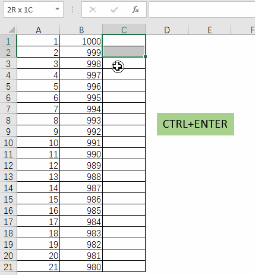
七、公式转换为数值
很多时候，我们用公式计算出结果以后，怕数据随源数据改变，或者数据复制后出错误，我们仅仅保留数值：
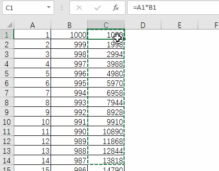
八、公式显示
如果需要看到详细的公式，可以点击【公式】菜单——【显示公式】选项：
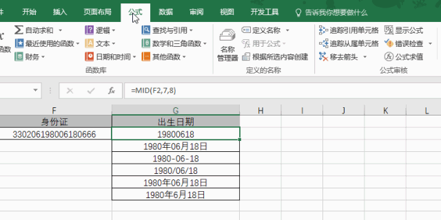
九、显示另一单元格公式
如果需要在别的单元格显示某单元格公式，可用FORMULATEXT函数：

十、隐藏公式
如果不想让别人看到你的公式，可以将公式隐藏，操作步骤：
1、选中公式单元格，打开【设置单元格格式】对话框，【保护】选项卡下，勾选“锁定”与“隐藏”：
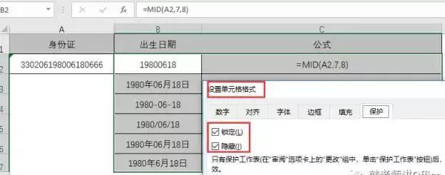
2、设置保护工作表：
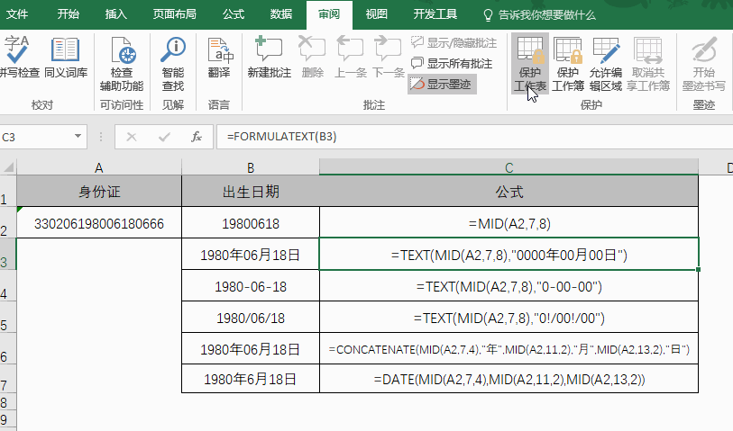
十一、保护公式
选中非公式区域，取消单元格锁定，公式区域不必操作，再设置保护工作表：
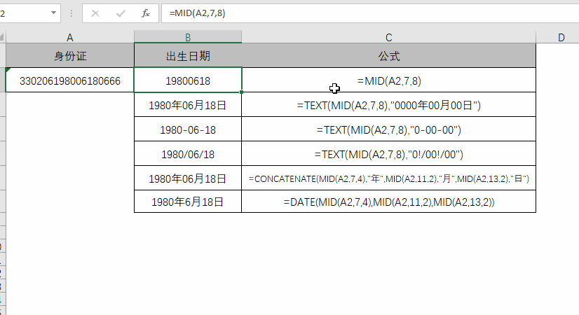
这样操作以后，公式单元格不能被选中。
十二、显示公式部分计算结果
选取公式中的要显示的部分表达式，按F9键，即可部分显示结果：
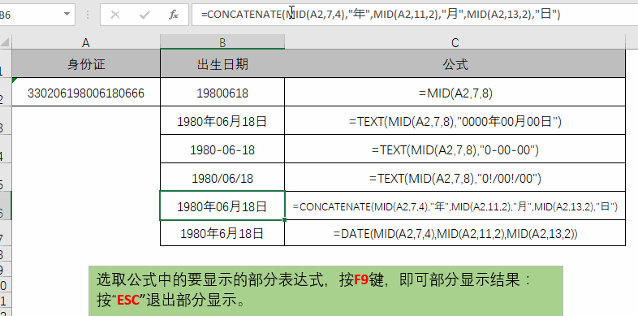
按“ESC”退出部分显示。
此种方法，也可以检查公式哪部分出错。
十三、中断公式编辑
有时候在编辑公式状态下，鼠标不小心点到了其它单元格，出现公式编辑取消不掉的情况，此时，应该选择公式编辑栏左侧的红色“×”，强行停止公式编辑：
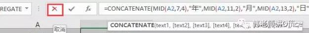
如下动图：
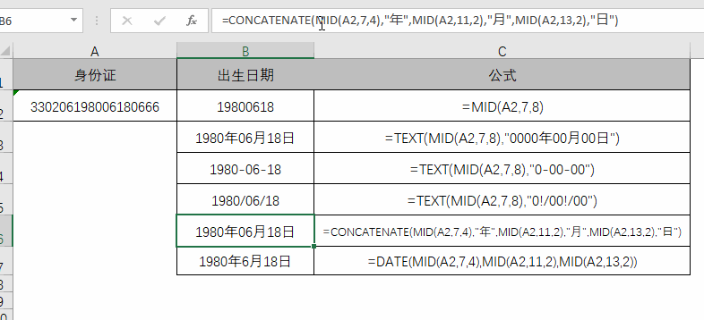
在公式编辑过程中，你还遇到哪些难点？请留言给韩老师。